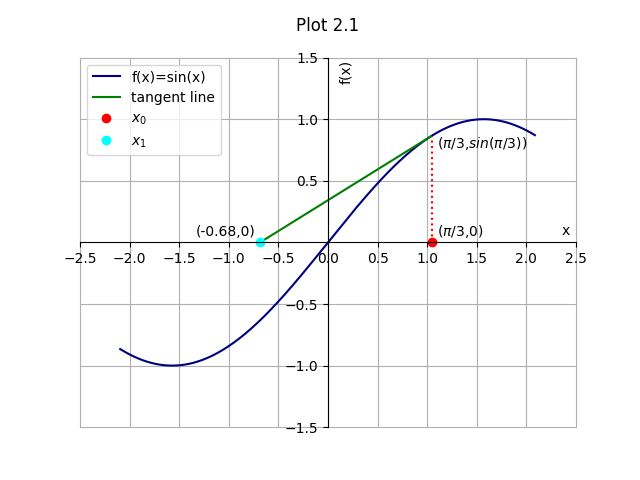
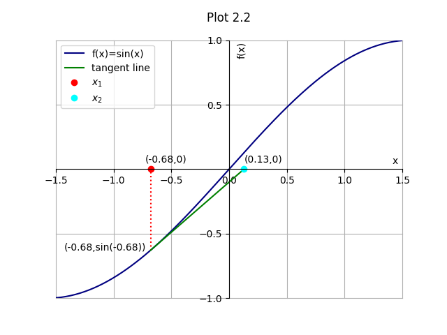
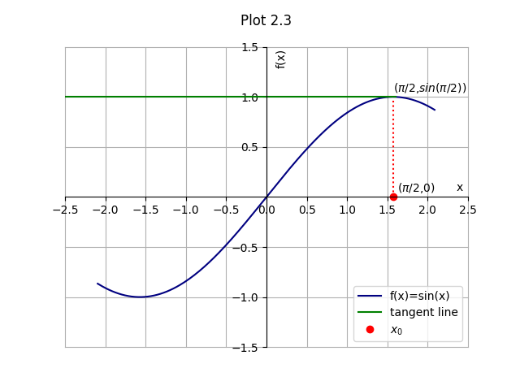
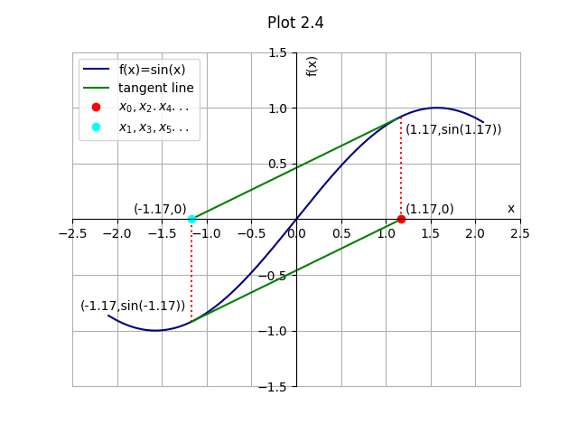

Index ################################################################# Newton Raphson Method ################################################################# One quality, bisection method is notorious for is its order of convergence. Linear convergence is very slow for calculation of roots in most cases and Newton Raphson method is the best known alternative when speedup is the ultimate requirement. This method's quadratic convergence can be linked to its involvement of the function's derivative in its calculation, which is known to converge much faster than the function itself. A single initial guess is made for the valie of root x of function f(x).Along with f(x), its derivative (f'(x)) is also calculated. Then value of x for ith iteration is calculated using the formula xi = xi-1-(f(x)/f'(x)) A smart initial guess, well within the limits of the function can help thi method in converging very fast. Visually, tangent line is drawn at the curve on initial guess of x=x0. The point at which the tangent line intersects the x-axis becomes the value of x1 for next iteration, and so on. Computationally, the value of x0 is guessed and xith values are calculated using the formula given above till a value of x is close enough to the value of one of the roots of the equation within permissible error/approximation limits. Suppose, f(x) = sin(x) In the graph given below, point marked red is the value of xi-1 and point marked blue (cyan) is the value of xi. The straight green line is the tangent to the curve f(x)=sin(x) at x=xi-1 for ith iteration.

The above plot 1.1 shows the first iteration of the algorithm. x0 is the initial guess of pi/3. This gives us the abscissa of x1 equal to 0.68. Since this is not close enough to the root, the program proceeds towards next iteration.

Now, x2 is considered for evaluation in the next iteration of the algorithm. As, can be seen, convergence towards the root is faster than in case of bisection method. After further iterations in a similar manner, value of f(xi) approaches zero. When its value gets close enough to zero, within permissible limits of approximation of result (provided by user), the value of that xi is returned as value of a root of the function. Drawbacks: 1. Fast convergence comes at a price of uncertainity of finding the root. Bisection method was certain to give value of a root provided its presence in the interval. But, evaluation of function can fly off the limits in certain cases of Newton Raphson method. For the above example, suppose the initial guess was x=pi/2. This case is depicted in the following graph.

Here, value of x1 cannot be determined for next iteration, thus failing the algorithm. 2. A bad choice of value of x can lead to repetition in values of x in the subsequent iterations. This way, we never get the value of root because we remain stuck in the loop, as shown in graph.

An alternative to avoid such situations is to make a combined use of bisection and Newton Raphson method. Bisection method is used to determine the bounds for value of x. Whenever, Newton Raphson method fails to get a new value of x within those bounds, bisection method is applied to get new bounds for Newton Raphson method to operate. A new value is required to avoid returning of same two roots alternately. Although this ascertains that a root will be returned if present, the execution time of this algorithm will be slower than that of ordinary Newton Raphson method. can be generalized to argand plane for complex nums All graphs are plotted using python matplotlib. See plots index for programs